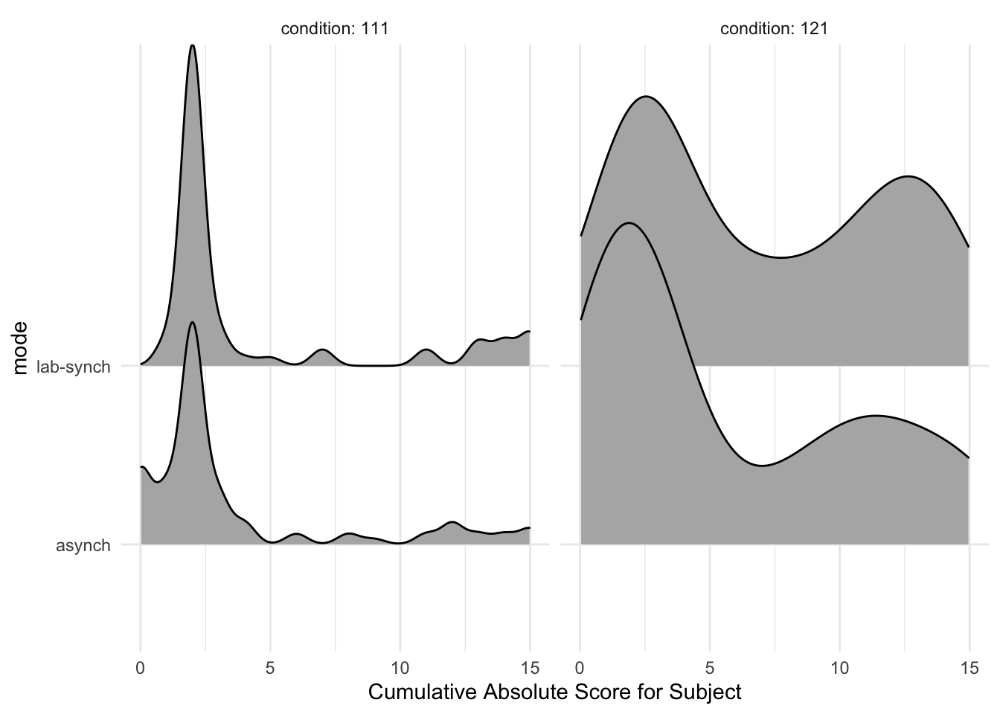
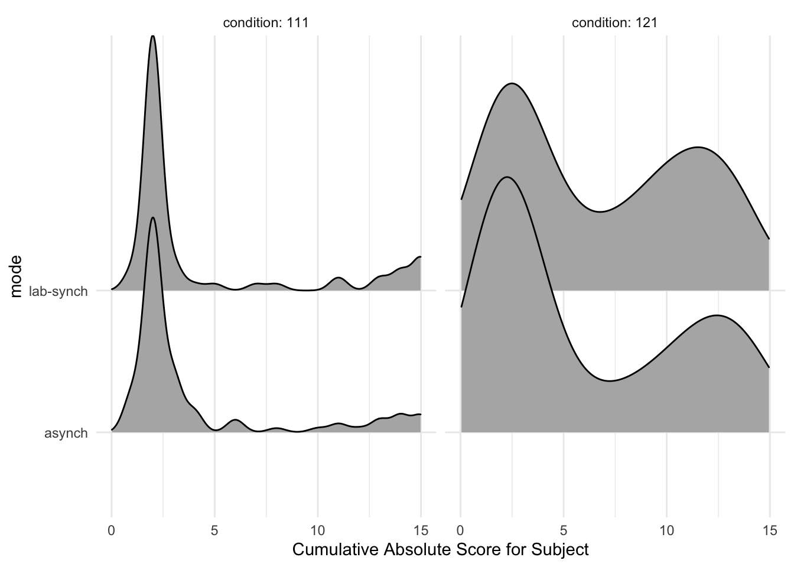
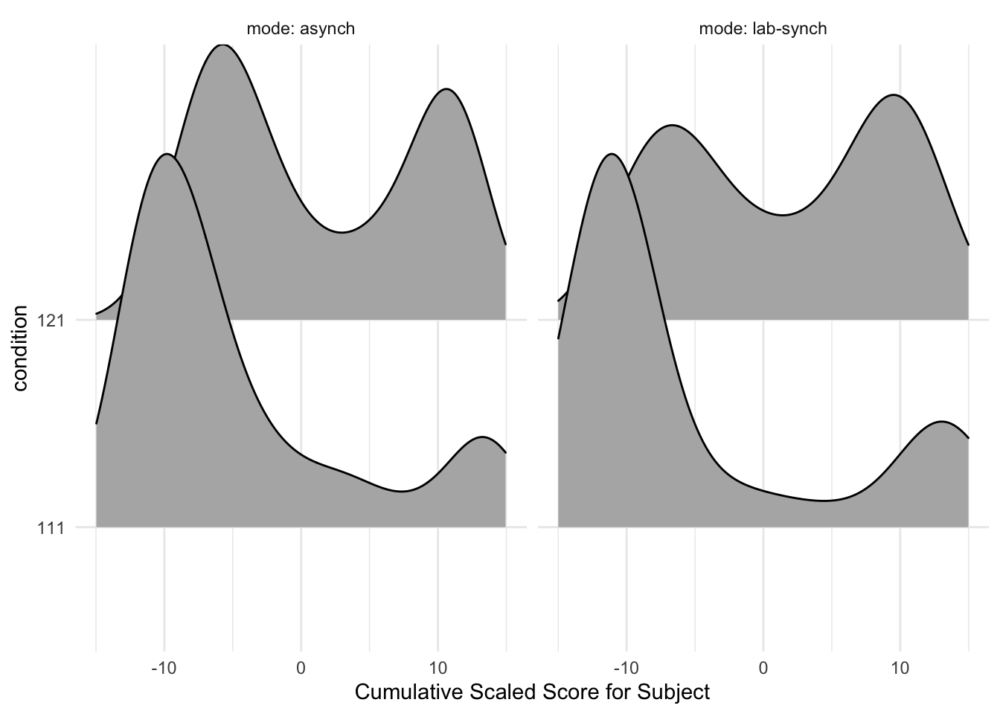
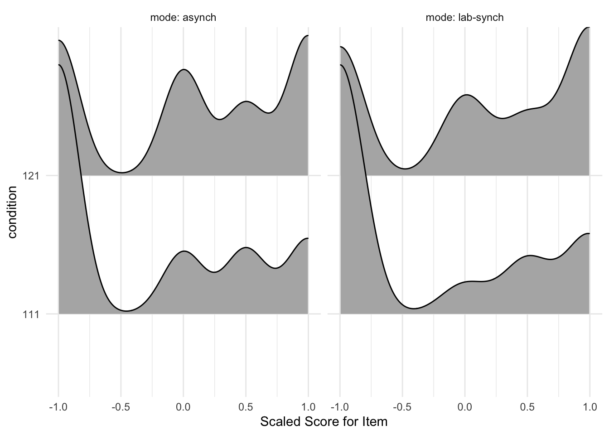

The purpose of this notebook is explore the distribution of dependent variables for Study SGC3A.
Pre-Requisite
Followed By
1_sgc3A_harmonize.qmd
2_sgc3A_rescoring.qmd
CODE
#IMPORT DATA df_items<-read_rds('data/2-scored-data/sgc3a_scored_items.rds')df_subjects<-read_rds('data/2-scored-data/sgc3a_scored_participants.rds')#SEPARATE ITEM DATA BY QUESTION TYPEdf_scaffold<-df_items%>%filter(q<6)#TODO run when have rest of data scored # df_test <- df_items %>% filter(q > 6) %>% filter (q %nin% c(6,9))
3.1 Sample
3.1.1 Data Collection
Data was initially collected (in person, SONA groups in computer lab) in Fall 2017. In Spring 2018, additional data were collected after small modifications were made to the experimental platform to increase the size of multiple-choice input buttons, and to add an additional free-response question following the main task block. In Fall 2021, the study was replicated using asynchronous, online SONA pool, with additional participants collected in Winter 2022.
CODE
title="Participants by Condition and Data Collection Period"cols=c("Control Condition","Impasse Condition","Total for Period")cont<-table(df_subjects$term, df_subjects$condition)cont%>%addmargins()%>%kbl(caption =title, col.names =cols)%>%kable_classic()
Participants by Condition and Data Collection Period
Descriptive Statistics of Participant Age and Gender
min
Q1
median
Q3
max
mean
sd
n
missing
female
lab
18
19
20
21
33
20.4
2.12
126
0
78
online
18
20
20
21
31
20.6
2.00
204
0
137
For in-person collection, 126 participants (60 % female ) undergraduate STEM majors at a public American University participated in person in exchange for course credit (age: 18 - 33 years). Participants were randomly assigned to one of two experimental groups.
For online replication 204 participants (70 % female ) undergraduate STEM majors at a public American University participated online, asynchronously in exchange for course credit (age: 18 - 31 years). Participants were randomly assigned to one of two experimental groups.
3.2 Response Accuracy
3.2.1 Cumulative Scores
Cumulative scores indicate the response accuracy by participant across all items in the graph comprehension task.
3.2.1.1 Cumulative Absolute Score
Recall from Section 2.1.2.1 that the absolute score (following the dichotomous scoring approach) indicates if the subject’s response for a particular item was perfectly correct: whether they selected all correct answer options and no others (excluding certain allowed exceptions, such as also selecting the data point referenced in the question). The absolute score for an individual item is either 0 or 1. When summarized across the entire set of items, the cumulative absolute score for an individual subject ranges from [0,15].
TODO sanity check this against s_ABS and s_NABS ::: {.cell}
Descriptive Statistics of Response Accuracy (Cumulative Absolute Score)
min
Q1
median
Q3
max
mean
sd
n
missing
lab
1
2
3
10
15
5.65
4.70
126
0
online
1
2
2
9
15
5.12
4.59
204
0
:::
For in person collection, cumulative absolute scores (n = 126) range from 1 to 15 with a mean score of (M = 5.65, SD = 4.7).
For online replication, (online) cumulative accuracy scores (n = 204) range from 1 to 15 with a mean score of (M = 5.12, SD = 4.59).
CODE
#VISUALIZE distribution of response accuracy across SUBJECTS#HISTOGRAMstats=df_subjects%>%group_by(condition, mode)%>%dplyr::summarise(mean =mean(absolute_score))gf_bar(~absolute_score, data =df_subjects)%>%gf_facet_grid(condition~mode, labeller =label_both)%>%gf_lims(x =c(0, 15))%>%gf_vline(data =stats, xintercept =~mean, color ="red")+labs(x ="Cumulative Absolute Score for Subject")+theme_minimal()
#RIDGEPLOTggplot(data =df_subjects, aes(x =absolute_score, y =mode))+geom_density_ridges()+xlim(0,15)+facet_wrap(~condition, labeller =label_both)+labs( x ="Cumulative Absolute Score for Subject")+theme_minimal()
Picking joint bandwidth of 0.426
Picking joint bandwidth of 1.83

CODE
#VISUALIZE distribution of response accuracy across SUBJECTS#HISTOGRAMstats=df_subjects%>%group_by(condition, mode)%>%dplyr::summarise(mean =mean(s_NABS))gf_bar(~s_NABS, data =df_subjects)%>%gf_facet_grid(condition~mode, labeller =label_both)%>%gf_lims(x =c(0, 15))%>%gf_vline(data =stats, xintercept =~mean, color ="red")+labs(x ="Cumulative Absolute Score for Subject")+theme_minimal()
#RIDGEPLOTggplot(data =df_subjects, aes(x =s_NABS, y =mode))+geom_density_ridges()+xlim(0,15)+facet_wrap(~condition, labeller =label_both)+labs( x ="Cumulative Absolute Score for Subject")+theme_minimal()
Picking joint bandwidth of 0.426
Picking joint bandwidth of 1.72

TODO double check that the subject-totals match the sum of the item level totals
Descriptive Statistics of Response Accuracy (Cumulative Scaled Score)
min
Q1
median
Q3
max
mean
sd
n
missing
lab
-12.5
-10.9
-5
8.50
14
-1.70
9.52
126
0
online
-12.0
-8.0
-5
6.62
14
-1.53
8.59
204
0
:::
CODE
#VISUALIZE distribution of response accuracy across SUBJECTS#HISTOGRAMstats=df_subjects%>%group_by(condition, mode)%>%dplyr::summarise(mean =mean(s_SCALED))gf_histogram(~s_SCALED, data =df_subjects, binwidth =1)%>%gf_facet_grid(condition~mode, labeller =label_both)%>%gf_lims(x =c(-15, 15))%>%gf_vline(data =stats, xintercept =~mean, color ="red")+labs(x ="Cumulative Scaled Score for Subject")+theme_minimal()
#RIDGEPLOTggplot(data =df_subjects, aes(x =s_SCALED, y =condition))+geom_density_ridges()+xlim(-15,15)+facet_wrap(~mode, labeller =label_both)+labs( x ="Cumulative Scaled Score for Subject")+theme_minimal()
Picking joint bandwidth of 2.55
Picking joint bandwidth of 3.14

3.2.1.3 Cumulative Interpretation Scores
TODO describe interpretation score? can this be summarized
3.2.2 Item Score
Item scores indicate the response accuracy by a participant on each individual question in the graph comprehension task.
Descriptive Statistics of Response Accuracy (Absolute Score)
min
Q1
median
Q3
max
mean
sd
n
missing
lab
0
0
0
1
1
0.377
0.485
1890
0
online
0
0
0
1
1
0.342
0.474
3060
0
For in person collection, item absolute scores (n = 1890) range from 0 to 1 with a mean score of (M = 0.38, SD = 0.48).
For online replication, (online) item accuracy scores (n = 3060) range from 0 to 1 with a mean score of (M = 0.34, SD = 0.47).
CODE
#VISUALIZE distribution of response accuracy across ITEMS#HISTOGRAMstats=df_items%>%group_by(condition, mode)%>%dplyr::summarise(mean =mean(score_niceABS))gf_bar(~score_niceABS, data =df_items)%>%gf_facet_grid(condition~mode, labeller =label_both)%>%gf_vline(data =stats, xintercept =~mean, color ="red")+labs(x ="Absolute Score for Item")+theme_minimal()
CODE
ggplot(data =df_items, aes(x =score_niceABS, y =condition))+geom_density_ridges()+facet_wrap(mode~., labeller =label_both)+labs( x ="Absolute Score for Item")+theme_minimal()
Descriptive Statistics of Response Accuracy (Scaled Score)
min
Q1
median
Q3
max
mean
sd
n
missing
lab
-1
-1
0
1.0
1
-0.113
0.867
1890
0
online
-1
-1
0
0.5
1
-0.102
0.830
3060
0
TODO update this For in person collection, item absolute scores (n = 1890) range from 0 to 1 with a mean score of (M = 0.38, SD = 0.48).
For online replication, (online) item accuracy scores (n = 3060) range from 0 to 1 with a mean score of (M = 0.34, SD = 0.47).
CODE
#VISUALIZE distribution of response accuracy across ITEMS#HISTOGRAMstats=df_items%>%group_by(condition, mode)%>%dplyr::summarise(mean =mean(score_SCALED))gf_histogram(~score_SCALED, data =df_items)%>%gf_facet_grid(condition~mode, labeller =label_both)%>%gf_vline(data =stats, xintercept =~mean, color ="red")+labs(x ="Scaled Score for Item")+theme_minimal()
CODE
ggplot(data =df_items, aes(x =score_SCALED, y =condition))+geom_density_ridges()+xlim(-1,1)+facet_wrap(~mode, labeller =label_both)+labs( x ="Scaled Score for Item")+theme_minimal()
Picking joint bandwidth of 0.167
Picking joint bandwidth of 0.191

3.2.2.3 Item Interpretation Scores
CODE
#VISUALIZE distribution of interpretations across all ITEMS#HISTOGRAMgf_barh(~interpretation, data =df_items, fill =~mode)%>%gf_facet_grid(mode~condition, labeller =label_both)+labs(x ="Interpretation for Item")+theme_minimal()+theme(legend.position ="none")
CODE
#restructue data temp<-df_items%>%select(mode, condition,
score_TRI, score_TVERSKY, score_SATISFICE, score_ORTH)t.long=gather(temp,score, value, 3:6)# t.long[t.long == ""] = NA#TODO CONTINGENCY TABLE FOR THIS ggplot(data =t.long, aes(x =value, y =score, fill=condition))+geom_density_ridges()+facet_wrap(~condition, labeller =label_both)+labs( x ="Interpretation Scores for Item")+theme_minimal()
Descriptive Statistics of Response Latency (Time on Study)
min
Q1
median
Q3
max
mean
sd
n
missing
lab
6.01
10.50
12.2
14.4
23.9
12.8
3.37
126
0
online
2.91
9.18
11.5
15.0
111.0
13.4
9.21
204
0
Total time on study for in person subjects (n = 126) ranged from 6.01 to 23.86 minutes with a mean duration of (M = 12.8, SD = 3.37).
Total time on study for online replication subjects (n = 204) ranged from 2.91 to 111.02 minutes with a mean duration of (M = 13.37, SD = 9.21).
CODE
#VISUALIZE distribution of response timeplab<-gf_dhistogram(~totaltime_m, data =df_subjects)%>%gf_vline(xintercept =~time.stats["lab",]$mean, color ="black")%>%gf_fitdistr(dist="gamma", color="red")+labs(title="Lab", x ="Total Time (mins)", y ="% subjects")+theme_minimal()ponline<-gf_dhistogram(~totaltime_m, data =df_subjects)%>%gf_vline(xintercept =~time.stats["online",]$mean, color ="black")%>%gf_fitdistr(dist ="gamma", color="red")+labs(title="Online", x ="Total Time (mins)", y ="% subjects")+theme_minimal()plot<-ggarrange(plab, ponline, common.legend =TRUE, nrow =1, ncol =2)annotate_figure(plot,
top =text_grob("Total Time by Study Mode",color ="black", face ="bold", size =14),
bottom =text_grob("fit by Gamma distribution", face ="italic", size =10))
TODO consider log transform of response latency datasee archive sgc3A_participants.Rmd
Analysis of Variance Table (Type III SS)
Model: s_SCALED ~ condition
SS df MS F PRE p
----- --------------- | --------- --- -------- ------ ------ -----
Model (error reduced) | 3348.942 1 3348.942 47.835 0.1273 .0000
Error (from model) | 22963.145 328 70.010
----- --------------- | --------- --- -------- ------ ------ -----
Total (empty model) | 26312.088 329 79.976
A simple linear regression model predicting cumulative scaled score (at subject level) by condition explains 13% of the total variance, F(1,329) = 47.8, p < 0.001. The model predicts that participants in the impasse condition will score on average 6.38 points higher than those in the control condition, 95% CI [4.56, 8.19].
We fitted a linear model (estimated using OLS) to predict s_SCALED with condition (formula: s_SCALED ~ condition). The model explains a statistically significant and weak proportion of variance (R2 = 0.13, F(1, 328) = 47.84, p < .001, adj. R2 = 0.12). The model's intercept, corresponding to condition = 111, is at -4.92 (95% CI [-6.23, -3.61], t(328) = -7.39, p < .001). Within this model:
- The effect of condition [121] is statistically significant and positive (beta = 6.38, 95% CI [4.56, 8.19], t(328) = 6.92, p < .001; Std. beta = 0.71, 95% CI [0.51, 0.92])
Standardized parameters were obtained by fitting the model on a standardized version of the dataset. 95% Confidence Intervals (CIs) and p-values were computed using the Wald approximation.
Analysis of Variance Table (Type III SS)
Model: s_NABS ~ condition
SS df MS F PRE p
----- --------------- | -------- --- ------- ------ ------ -----
Model (error reduced) | 335.543 1 335.543 16.361 0.0475 .0001
Error (from model) | 6726.763 328 20.508
----- --------------- | -------- --- ------- ------ ------ -----
Total (empty model) | 7062.306 329 21.466
A simple linear regression model predicting cumulative absolute score by condition explains 5% of variance, F(1,328) = 16.36, p < 0.001. The model predicts that subjects in the impasse condition will score on average 2 points higher than those in the control condition (Beta = 2.02, 95% CI [1.04, 3.00])
We fitted a linear model (estimated using OLS) to predict s_NABS with condition (formula: s_NABS ~ condition). The model explains a statistically significant and weak proportion of variance (R2 = 0.05, F(1, 328) = 16.36, p < .001, adj. R2 = 0.04). The model's intercept, corresponding to condition = 111, is at 4.27 (95% CI [3.56, 4.98], t(328) = 11.86, p < .001). Within this model:
- The effect of condition [121] is statistically significant and positive (beta = 2.02, 95% CI [1.04, 3.00], t(328) = 4.04, p < .001; Std. beta = 0.44, 95% CI [0.22, 0.65])
Standardized parameters were obtained by fitting the model on a standardized version of the dataset. 95% Confidence Intervals (CIs) and p-values were computed using the Wald approximation.
CODE
library(lmerTest)m.m1<-lmer(score_SCALED~(1+condition|subject), data =df_items)m.m1
Linear mixed model fit by REML ['lmerModLmerTest']
Formula: score_SCALED ~ (1 + condition | subject)
Data: df_items
REML criterion at convergence: 10172
Random effects:
Groups Name Std.Dev. Corr
subject (Intercept) 0.626
condition121 0.472 -0.58
Residual 0.619
Number of obs: 4950, groups: subject, 330
Fixed Effects:
(Intercept)
-0.0718
We fitted a constant (intercept-only) linear mixed model (estimated using REML and nloptwrap optimizer) to predict score_SCALED (formula: score_SCALED ~ 1). The model included condition and subject as random effects (formula: ~1 + condition | subject). . The model's intercept is at -0.07 (95% CI [-0.14, -8.19e-03], t(4945) = -2.21, p = 0.027). Within this model:
- ()
Standardized parameters were obtained by fitting the model on a standardized version of the dataset. 95% Confidence Intervals (CIs) and p-values were computed using
CODE
m.m2<-lmer(score_SCALED~(1+condition|q), data =df_items)m.m2
Linear mixed model fit by REML ['lmerModLmerTest']
Formula: score_SCALED ~ (1 + condition | q)
Data: df_items
REML criterion at convergence: 11466
Random effects:
Groups Name Std.Dev. Corr
q (Intercept) 0.480
condition121 0.500 -0.84
Residual 0.762
Number of obs: 4950, groups: q, 15
Fixed Effects:
(Intercept)
0.0114
Linear mixed model fit by REML. t-tests use Satterthwaite's method [
lmerModLmerTest]
Formula: score_SCALED ~ (1 + condition | q)
Data: df_items
REML criterion at convergence: 11466
Scaled residuals:
Min 1Q Median 3Q Max
-1.9951 -0.7895 -0.0907 0.6457 2.1698
Random effects:
Groups Name Variance Std.Dev. Corr
q (Intercept) 0.23 0.480
condition121 0.25 0.500 -0.84
Residual 0.58 0.762
Number of obs: 4950, groups: q, 15
Fixed effects:
Estimate Std. Error df t value Pr(>|t|)
(Intercept) 0.0114 0.0684 14.0000 0.17 0.87
We fitted a constant (intercept-only) linear mixed model (estimated using REML and nloptwrap optimizer) to predict score_SCALED (formula: score_SCALED ~ 1). The model included condition and q as random effects (formula: ~1 + condition | q). . The model's intercept is at 0.01 (95% CI [-0.12, 0.15], t(4945) = 0.17, p = 0.867). Within this model:
- ()
Standardized parameters were obtained by fitting the model on a standardized version of the dataset. 95% Confidence Intervals (CIs) and p-values were computed using
CODE
m.m3<-lmer(score_SCALED~(1+condition|q)+(1+condition|subject), data =df_items)m.m3%>%summary()
Linear mixed model fit by REML. t-tests use Satterthwaite's method [
lmerModLmerTest]
Formula: score_SCALED ~ (1 + condition | q) + (1 + condition | subject)
Data: df_items
REML criterion at convergence: 8935
Scaled residuals:
Min 1Q Median 3Q Max
-3.433 -0.660 -0.037 0.733 3.452
Random effects:
Groups Name Variance Std.Dev. Corr
subject (Intercept) 0.338 0.581
condition121 0.439 0.663 -0.68
q (Intercept) 0.188 0.433
condition121 0.184 0.429 -0.79
Residual 0.288 0.537
Number of obs: 4950, groups: subject, 330; q, 15
Fixed effects:
Estimate Std. Error df t value Pr(>|t|)
(Intercept) -0.00842 0.07533 19.99189 -0.11 0.91
We fitted a constant (intercept-only) linear mixed model (estimated using REML and nloptwrap optimizer) to predict score_SCALED (formula: score_SCALED ~ 1). The model included condition, q and subject as random effects (formula: list(~1 + condition | q, ~1 + condition | subject)). . The model's intercept is at -8.42e-03 (95% CI [-0.16, 0.14], t(4942) = -0.11, p = 0.911). Within this model:
- ()
Standardized parameters were obtained by fitting the model on a standardized version of the dataset. 95% Confidence Intervals (CIs) and p-values were computed using
---# title: 'Exploration'subtitle: 'Study SGC3A | 3 Exploration'# author: 'Amy Rae Fox'# always_allow_html: true # header-includes:# - \usepackage{amsmath}# output:# html_document:# theme: yeti# code_folding: hide# fig_caption: yes# number_sections: yes# toc: yes# toc_depth: 4# toc_float:# collapsed: no# smooth_scroll: yes# pdf_document: # toc: true# toc_depth: 3# latex_engine: xelatex# font-family: "DejaVu Sans"# mainfont: "DejaVu Sans"---\newpage# Exploration {#sec-SGC3A-exploration}**THIS NOTEBOOK IS INCOMPLETE**TODO- double check which Qs in task are non-discriminating (6 and 9?)```{r}#| label: SETUP#| echo : true#| warning : false#| message : falselibrary(tidyverse) #ALL THE THINGSlibrary(kableExtra) #printing tables library(mosaic) #simple descriptives [favstats]library(Hmisc) # %nin% operatorlibrary(ggpubr) #arrange plots# library(pastecs) #stat.desc# library(car) #ANOVA, qqplot# library(effectsize) #effect size#set some output optionslibrary(dplyr, warn.conflicts =FALSE)options(dplyr.summarise.inform =FALSE)options(ggplot2.summarise.inform =FALSE)options(scipen=1, digits=3)```*The purpose of this notebook is explore the distribution of dependent variables for Study SGC3A.*+------------------------+---------------+| Pre-Requisite | Followed By |+========================+===============+| 1_sgc3A_harmonize.qmd\ | || 2_sgc3A_rescoring.qmd | |+------------------------+---------------+```{r}#| label: IMPORT-DATA#| echo : true#| warning : false#| message : false#IMPORT DATA df_items <-read_rds('data/2-scored-data/sgc3a_scored_items.rds')df_subjects <-read_rds('data/2-scored-data/sgc3a_scored_participants.rds')#SEPARATE ITEM DATA BY QUESTION TYPEdf_scaffold <- df_items %>%filter(q <6)#TODO run when have rest of data scored # df_test <- df_items %>% filter(q > 6) %>% filter (q %nin% c(6,9))```## Sample### Data CollectionData was initially collected (in person, SONA groups in computer lab) in Fall 2017. In Spring 2018, additional data were collected after small modifications were made to the experimental platform to increase the size of multiple-choice input buttons, and to add an additional free-response question following the main task block. In Fall 2021, the study was replicated using asynchronous, online SONA pool, with additional participants collected in Winter 2022.```{r}#| label : INSPECT-DATA-COLLECTIONtitle ="Participants by Condition and Data Collection Period"cols =c("Control Condition","Impasse Condition","Total for Period")cont <-table(df_subjects$term, df_subjects$condition)cont %>%addmargins() %>%kbl(caption = title, col.names = cols) %>%kable_classic()```### Participants```{r PARTICIPANTS}#Describe participantssubject.stats <-rbind("lab"= df_subjects %>%filter(mode =='lab-synch') %>%select(age) %>%unlist() %>%favstats(),"online"= df_subjects %>%filter(mode =="asynch") %>%select(age) %>%unlist() %>%favstats()) subject.stats$female <-c( (df_subjects %>%filter(mode =='lab-synch') %>%filter(gender=="Female") %>%count())$n, (df_subjects %>%filter(mode =="asynch") %>%filter(gender=="Female") %>%count())$n)title ="Descriptive Statistics of Participant Age and Gender"subject.stats %>%kbl (caption = title) %>%kable_classic()```For **in-person** collection, `r subject.stats["lab",]$n` participants (`r round(subject.stats["lab",]$female/subject.stats["lab",]$n,1) * 100` % female ) undergraduate STEM majors at a public American University participated *in person* in exchange for course credit (age: `r (subject.stats['lab','min'])` - `r (subject.stats['lab','max'])` years). Participants were randomly assigned to one of two experimental groups.For **online replication** `r subject.stats["online",]$n` participants (`r round(subject.stats["online",]$female/subject.stats["online",]$n,1) * 100` % female ) undergraduate STEM majors at a public American University participated *online, asynchronously* in exchange for course credit (age: `r (subject.stats['online','min'])` - `r (subject.stats['online','max'])` years). Participants were randomly assigned to one of two experimental groups.## Response Accuracy### Cumulative ScoresCumulative scores indicate the response accuracy by participant across all items in the graph comprehension task.#### Cumulative Absolute ScoreRecall from [Section -@sec-absolute-scoring] that the absolute score (following the dichotomous scoring approach) indicates if the subject's response for a particular item was *perfectly* correct: whether they selected all correct answer options and no others (excluding certain allowed exceptions, such as also selecting the data point referenced in the question). The absolute score for an individual item is either 0 or 1. When summarized across the entire set of items, the cumulative absolute score for an individual subject ranges from \[0,15\].TODO sanity check this against s_ABS and s_NABS```{r}#| label: ABS-SUBJECTtitle ="Descriptive Statistics of Response Accuracy (Cumulative Absolute Score)"abs.stats <-rbind("lab"= df_subjects %>%filter(mode =='lab-synch') %>%select(absolute_score) %>%unlist() %>%favstats(),"online"= df_subjects %>%filter(mode =="asynch") %>%select(absolute_score) %>%unlist() %>%favstats()) abs.stats %>%kbl (caption = title) %>%kable_classic()```TODO why is cum absolute not same as item level absolute?```{r}#| label: TEMP-ABS-_ITEM_SUBJECTtitle ="Descriptive Statistics of Response Accuracy (Cumulative Absolute Score)"abs.stats <-rbind("lab"= df_subjects %>%filter(mode =='lab-synch') %>%select(s_ABS) %>%unlist() %>%favstats(),"online"= df_subjects %>%filter(mode =="asynch") %>%select(s_ABS) %>%unlist() %>%favstats()) abs.stats %>%kbl (caption = title) %>%kable_classic()``````{r}#| label: X-ABS-_ITEM_SUBJECTtitle ="Descriptive Statistics of Response Accuracy (Cumulative Absolute Score)"abs.stats <-rbind("lab"= df_subjects %>%filter(mode =='lab-synch') %>%select(s_NABS) %>%unlist() %>%favstats(),"online"= df_subjects %>%filter(mode =="asynch") %>%select(s_NABS) %>%unlist() %>%favstats()) abs.stats %>%kbl (caption = title) %>%kable_classic()```For *in person* collection, cumulative absolute scores (n = `r abs.stats["lab",]$n`) range from `r round(abs.stats["lab",]$min,2)` to `r round(abs.stats["lab",]$max,2)` with a mean score of (M = `r round(abs.stats["lab",]$mean,2)`, SD = `r round(abs.stats["lab",]$sd,2)`).For *online replication*, (online) cumulative accuracy scores (n = `r abs.stats["online",]$n`) range from `r round(abs.stats["online",]$min,2)` to `r round(abs.stats["online",]$max,2)` with a mean score of (M = `r round(abs.stats["online",]$mean,2)`, SD = `r round(abs.stats["online",]$sd,2)`).```{r}#| label: VIS-SUBJECT-ABS-SCORE#VISUALIZE distribution of response accuracy across SUBJECTS#HISTOGRAMstats = df_subjects %>%group_by(condition, mode) %>% dplyr::summarise(mean =mean(absolute_score))gf_bar(~absolute_score, data = df_subjects) %>%gf_facet_grid(condition~mode, labeller = label_both) %>%gf_lims(x =c(0, 15)) %>%gf_vline(data = stats, xintercept =~mean, color ="red") +labs(x ="Cumulative Absolute Score for Subject")+theme_minimal()#RIDGEPLOTggplot(data = df_subjects, aes(x = absolute_score, y = mode)) +geom_density_ridges() +xlim(0,15)+facet_wrap(~condition, labeller = label_both) +labs( x ="Cumulative Absolute Score for Subject") +theme_minimal()``````{r}#| label: VIS-ITEM-ABS-SCORE#VISUALIZE distribution of response accuracy across SUBJECTS#HISTOGRAMstats = df_subjects %>%group_by(condition, mode) %>% dplyr::summarise(mean =mean(s_NABS))gf_bar(~s_NABS, data = df_subjects) %>%gf_facet_grid(condition~mode, labeller = label_both) %>%gf_lims(x =c(0, 15)) %>%gf_vline(data = stats, xintercept =~mean, color ="red") +labs(x ="Cumulative Absolute Score for Subject")+theme_minimal()#RIDGEPLOTggplot(data = df_subjects, aes(x = s_NABS, y = mode)) +geom_density_ridges() +xlim(0,15)+facet_wrap(~condition, labeller = label_both) +labs( x ="Cumulative Absolute Score for Subject") +theme_minimal()```**TODO** double check that the subject-totals match the sum of the item level totals#### Cumulative Scaled ScoresTODO describe scaled score```{r}#| label: SCALED-SUBJECTtitle ="Descriptive Statistics of Response Accuracy (Cumulative Scaled Score)"scaled.stats <-rbind("lab"= df_subjects %>%filter(mode =='lab-synch') %>%select(s_SCALED) %>%unlist() %>%favstats(),"online"= df_subjects %>%filter(mode =="asynch") %>%select(s_SCALED) %>%unlist() %>%favstats()) scaled.stats %>%kbl (caption = title) %>%kable_classic()``````{r}#| label: VIS-SUBJECT-SCALED-SCORE#VISUALIZE distribution of response accuracy across SUBJECTS#HISTOGRAMstats = df_subjects %>%group_by(condition, mode) %>% dplyr::summarise(mean =mean(s_SCALED))gf_histogram(~s_SCALED, data = df_subjects, binwidth =1) %>%gf_facet_grid(condition~mode, labeller = label_both) %>%gf_lims(x =c(-15, 15)) %>%gf_vline(data = stats, xintercept =~mean, color ="red") +labs(x ="Cumulative Scaled Score for Subject")+theme_minimal()#RIDGEPLOTggplot(data = df_subjects, aes(x = s_SCALED, y = condition)) +geom_density_ridges() +xlim(-15,15)+facet_wrap(~mode, labeller = label_both) +labs( x ="Cumulative Scaled Score for Subject") +theme_minimal()```#### Cumulative Interpretation ScoresTODO describe interpretation score? can this be summarized ### Item ScoreItem scores indicate the response accuracy by a participant on each individual question in the graph comprehension task.#### Item Absolute Score```{r}#| label: ABS-ITEMtitle ="Descriptive Statistics of Response Accuracy (Absolute Score)"abs.stats.items <-rbind("lab"= df_items %>%filter(mode =='lab-synch') %>%select(score_niceABS) %>%unlist() %>%favstats(),"online"= df_items %>%filter(mode =="asynch") %>%select(score_niceABS) %>%unlist() %>%favstats()) abs.stats.items %>%kbl (caption = title) %>%kable_classic()```For *in person* collection, item absolute scores (n = `r abs.stats.items["lab",]$n`) range from `r round(abs.stats.items["lab",]$min,2)` to `r round(abs.stats.items["lab",]$max,2)` with a mean score of (M = `r round(abs.stats.items["lab",]$mean,2)`, SD = `r round(abs.stats.items["lab",]$sd,2)`).For *online replication*, (online) item accuracy scores (n = `r abs.stats.items["online",]$n`) range from `r round(abs.stats.items["online",]$min,2)` to `r round(abs.stats.items["online",]$max,2)` with a mean score of (M = `r round(abs.stats.items["online",]$mean,2)`, SD = `r round(abs.stats.items["online",]$sd,2)`).```{r}#| label: VIS-ITEMS-ABS-SCORE#VISUALIZE distribution of response accuracy across ITEMS#HISTOGRAMstats = df_items %>%group_by(condition, mode) %>% dplyr::summarise(mean =mean(score_niceABS))gf_bar(~score_niceABS, data = df_items) %>%gf_facet_grid(condition~mode, labeller = label_both) %>%gf_vline(data = stats, xintercept =~mean, color ="red") +labs(x ="Absolute Score for Item")+theme_minimal()ggplot(data = df_items, aes(x = score_niceABS, y = condition)) +geom_density_ridges()+facet_wrap(mode~., labeller = label_both) +labs( x ="Absolute Score for Item") +theme_minimal()```#### Item Scaled Score```{r}#| label: Scaled-ITEMtitle ="Descriptive Statistics of Response Accuracy (Scaled Score)"scaled.stats.items <-rbind("lab"= df_items %>%filter(mode =='lab-synch') %>%select(score_SCALED) %>%unlist() %>%favstats(),"online"= df_items %>%filter(mode =="asynch") %>%select(score_SCALED) %>%unlist() %>%favstats()) scaled.stats.items %>%kbl (caption = title) %>%kable_classic()```TODO update this For *in person* collection, item absolute scores (n = `r abs.stats.items["lab",]$n`) range from `r round(abs.stats.items["lab",]$min,2)` to `r round(abs.stats.items["lab",]$max,2)` with a mean score of (M = `r round(abs.stats.items["lab",]$mean,2)`, SD = `r round(abs.stats.items["lab",]$sd,2)`).For *online replication*, (online) item accuracy scores (n = `r abs.stats.items["online",]$n`) range from `r round(abs.stats.items["online",]$min,2)` to `r round(abs.stats.items["online",]$max,2)` with a mean score of (M = `r round(abs.stats.items["online",]$mean,2)`, SD = `r round(abs.stats.items["online",]$sd,2)`).```{r}#| label: VIS-ITEMS-SCALED-SCORE#VISUALIZE distribution of response accuracy across ITEMS#HISTOGRAMstats = df_items %>%group_by(condition, mode) %>% dplyr::summarise(mean =mean(score_SCALED))gf_histogram(~score_SCALED, data = df_items) %>%gf_facet_grid(condition~mode, labeller = label_both) %>%gf_vline(data = stats, xintercept =~mean, color ="red") +labs(x ="Scaled Score for Item")+theme_minimal()ggplot(data = df_items, aes(x = score_SCALED, y = condition)) +geom_density_ridges()+xlim(-1,1)+facet_wrap(~mode, labeller = label_both) +labs( x ="Scaled Score for Item") +theme_minimal()```#### Item Interpretation Scores```{r}#| label: VIS-ITEMS-INTERPRETATIONS#VISUALIZE distribution of interpretations across all ITEMS#HISTOGRAMgf_barh(~interpretation, data = df_items, fill =~mode) %>%gf_facet_grid(mode~condition, labeller = label_both) +labs(x ="Interpretation for Item")+theme_minimal()+theme(legend.position ="none")#restructue data temp <- df_items %>%select(mode, condition, score_TRI, score_TVERSKY, score_SATISFICE, score_ORTH) t.long =gather(temp,score, value, 3:6)# t.long[t.long == ""] = NA#TODO CONTINGENCY TABLE FOR THIS ggplot(data = t.long, aes(x = value, y = score, fill=condition)) +geom_density_ridges()+facet_wrap(~condition, labeller = label_both) +labs( x ="Interpretation Scores for Item") +theme_minimal()```## Response Latency- [TODO: Investigate super high and super low response times.]{style="color: red;"}.- [TODO: Investigate appropriate models for response time data. (see: https://lindeloev.github.io/shiny-rt/)]{style="color: red;"}.- Especially see https://lindeloev.github.io/shiny-rt/ for ideas on modelling reaction time data### Time on Study```{r DESCRIBE-TOTALTIME}#DESCRIBE distribution of response timetime.stats <-rbind("lab"= df_subjects %>%filter(mode =='lab-synch') %>%select(totaltime_m) %>%unlist() %>%favstats(),"online"= df_subjects %>%filter(mode =='asynch') %>%select(totaltime_m) %>%unlist() %>%favstats())title ="Descriptive Statistics of Response Latency (Time on Study)"time.stats %>%kbl(caption = title) %>%kable_classic()```Total time on study for *in person* subjects (n = `r time.stats["lab",]$n`) ranged from `r round(time.stats["lab",]$min,2)` to `r round(time.stats["lab",]$max,2)` minutes with a mean duration of (M = `r round(time.stats["lab",]$mean,2)`, SD = `r round(time.stats["lab",]$sd,2)`).Total time on study for *online replication* subjects (n = `r time.stats["online",]$n`) ranged from `r round(time.stats["online",]$min,2)` to `r round(time.stats["online",]$max,2)` minutes with a mean duration of (M = `r round(time.stats["online",]$mean,2)`, SD = `r round(time.stats["online",]$sd,2)`).```{r}#| label : VIS-TOTALTIME#| message : false#| warning : false#VISUALIZE distribution of response timeplab <-gf_dhistogram(~totaltime_m, data = df_subjects) %>%gf_vline(xintercept =~time.stats["lab",]$mean, color ="black") %>%gf_fitdistr(dist="gamma", color="red")+labs(title="Lab", x ="Total Time (mins)", y ="% subjects") +theme_minimal()ponline <-gf_dhistogram(~totaltime_m, data = df_subjects) %>%gf_vline(xintercept =~time.stats["online",]$mean, color ="black") %>%gf_fitdistr(dist ="gamma", color="red")+labs(title="Online", x ="Total Time (mins)", y ="% subjects") +theme_minimal()plot <-ggarrange(plab, ponline, common.legend =TRUE, nrow =1, ncol =2)annotate_figure(plot, top =text_grob("Total Time by Study Mode",color ="black", face ="bold", size =14),bottom =text_grob("fit by Gamma distribution", face ="italic", size =10))```**TODO consider log transform of response latency data** *see* archive sgc3A_participants.Rmd### Time on Question**TODO time on question**## Model Peeking```{r}library(supernova)library(report)library(lmerTest)library(lme4)m1 <-lm( s_SCALED ~ condition, data = df_subjects)m1summary(m1)anova(m1)supernova(m1)```A simple linear regression model predicting cumulative scaled score (at subject level) by condition explains 13% of the total variance, F(1,329) = 47.8, p < 0.001. The model predicts that participants in the impasse condition will score on average 6.38 points higher than those in the control condition, 95% CI [4.56, 8.19].```{r}report(m1)``````{r}m2 <-lm( s_NABS ~ condition, data = df_subjects)m2summary(m2)anova(m2)supernova(m2)```A simple linear regression model predicting cumulative absolute score by condition explains 5% of variance, F(1,328) = 16.36, p < 0.001. The model predicts that subjects in the impasse condition will score on average 2 points higher than those in the control condition (Beta = 2.02, 95% CI [1.04, 3.00])```{r}report(m2)``````{r}m.m1 <-lmer( score_SCALED ~ (1+ condition|subject), data = df_items)m.m1summary(m.m1)report(m.m1)``````{r}m.m2 <-lmer( score_SCALED ~ (1+ condition|q), data = df_items)m.m2summary(m.m2)report(m.m2)``````{r}m.m3 <-lmer( score_SCALED ~ (1+ condition|q) + (1+condition|subject), data = df_items)m.m3 %>%summary() m.m3 %>%report()``````{r}anova(m.m1, m.m2, m.m3)```## Resources- https://rpkgs.datanovia.com/ggpubr/reference/index.html